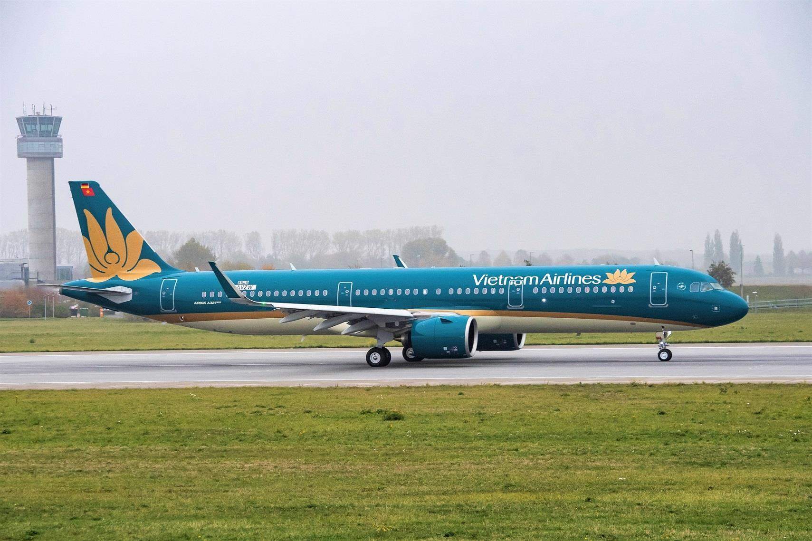
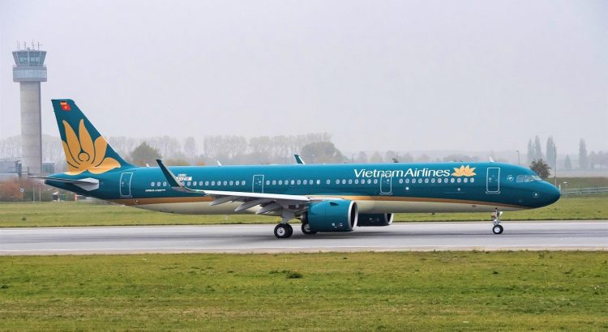
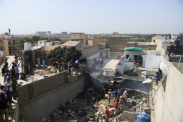
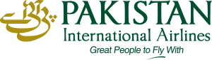

Vietnam: All Pakistani Pilots Possess Valid Licenses

Authorities in the Vietnamese capital, Hanoi, have confirmed that all Pakistani pilots working for various Vietnamese airlines have valid licenses, according to Reuters.No pilot was involved in a crash or safety hazard, according to the government’s official statement.
Last month, Vietnam suspended all Pakistani pilots working for its domestic airlines.According to Vietnam’s Civil Aviation, the decision was made due to fears that the licenses of some Pakistani pilots could be forged.
A statement from the Vietnamese government stated that 'all licenses administered by the Pakistani aviation regulator are legitimate and valid.'It went on to say, 'there are no fake licenses, as mentioned by the media.'
According to the Civil Aviation Authority of Vietnam (CAAV), the country had issued licenses to 27 Pakistani pilots and 12 of them are still active.Fifteen other pilots have had their contracts expired or were inactive due to the coronavirus outbreak.
Eleven of the 12 pilots in service were working for Vietnam’s budget airline, Jet Jet Aviation, and one for Jetstar Pacific, a unit of the national airline Vietnam Airlines.Other governments employing Pakistani pilots conducted similar reviews.
'All CPL/ATPL pilot licenses issued by the Pakistan Civil Aviation Authority (PCAA) are genuine and validly issued,' read a letter written by CAA Director General Hassan Nasir Jamy to Oman’s Public Authority for Civil Aviation Air Traffic Control Services Director Mubarak Saleh al-Ghailani.'None of the pilot licenses are fake, rather the matter has been misconstrued and incorrectly highlighted in the media/social media.'
After the crash of a PIA passenger plane in Karachi, Pakistan’s Civil Aviation Minister, Ghulam Sarwar Khan, had revealed in Parliament that the flying licenses of about 260 pilots were fake.As a result of this statement, the ability and professional reputation of Pakistani pilots around the world were severely damaged.
'Some international airlines had sought the verification of 104 Pakistani pilots, of whom eight are yet to be cleared.'
Later, on July 16, the Civil Aviation Authority of Pakistan said that all commercial and airline transport pilot licenses issued by the airline were valid.Following this confirmation, many countries resumed the services of Pakistani pilots.A total of 97 people, including passengers and crew, were killed in the May 22 crash near Karachi International Airport.
'The ‘suspect’ pilots have been asked to defend their licenses in accordance with the Pakistan Civil Aviation Rules, 1994,' he added.
'All this was done keeping in view the highest concerns about air safety all over the world, and also to ensure that questions raised in respect of an identified class of pilots does not prejudice hundreds of Pakistani pilots flying aircraft most professionally and safely within and outside Pakistan.'
Pakistan last month decided to ground one-third of its pilots after reports emerged that their pilots’ credentials were forged.Despite a request from the US Federal Aviation Administration to the Pakistani embassy in Washington for an immediate response to Pakistan’s downgrading of its air safety rating, no response has been forthcoming.
The FAA’s new rating on Pakistani aviation security means that Pakistani airlines may be subject to additional inspections at US airports and will not be allowed to extend further flights.
[bsa_pro_ad_space id=4]
Share on Facebook Tweet Follow us
Posted On: 2020-07-19T00:00:00
Posted By: Doris Mkwaya






Content Date: 2020-07-19
Download Date: 2021-07-09
Document ID: L0C04E9A4